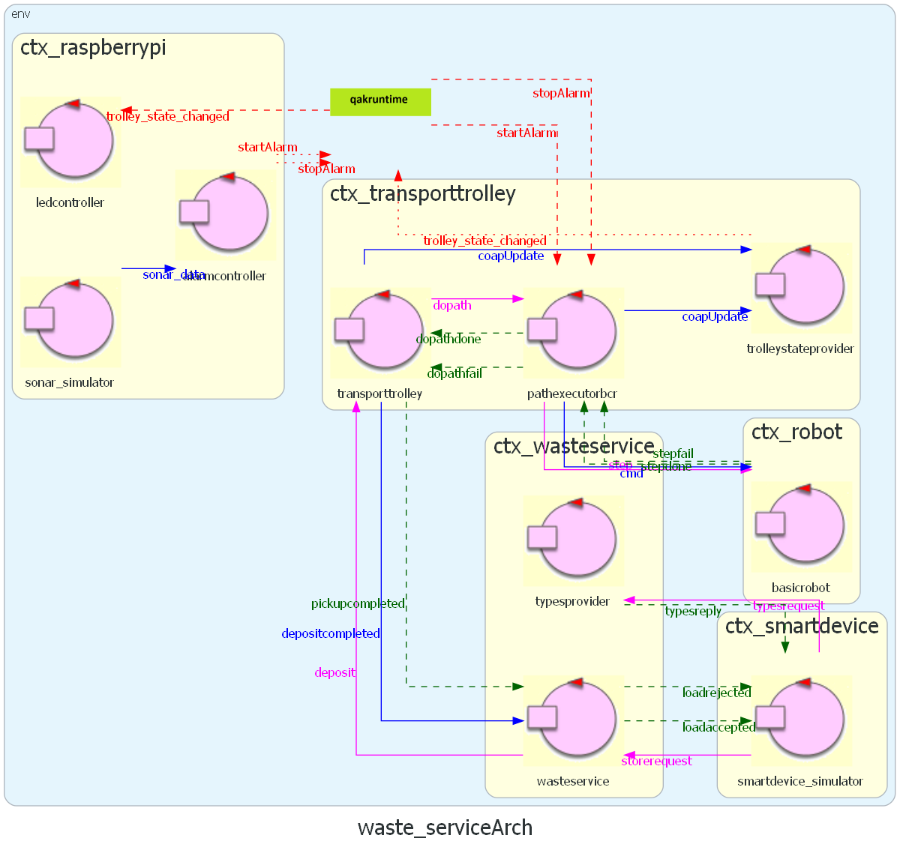

Problem Analysis
Problematiche che possono verificarsi;Vedere quale software è disponibile e dove/come possiamo utilizzarlo;
il problema principale è realizzare il meccanismo di stop/resume. E conseguentemente implementare il return a home.
Logical Architecture from Sprint1
 QAK model: waste_service.qak
QAK model: waste_service.qak
Sprint 2 Software
The Sprint 2 software will be the product of the analysis of problems related to the Raspberry Pi. We will analyze the main problems of the 4th requirement, and discuss the possible solutions and their differences.Since the Raspberry Pi is situated on a computational node different from the Waste Service one, we will need to add a new context, which we're going to call "
Sonar
What's the purpose of the sonar? Which components depend on it and where will them be located?For the problem analysis test plans we're going to use an actor that simulates the sonar input component, in localhost.
- Send a message for each input data detection. That solution is the most flexible and general purpose to implement: we send everything the sonar knows and let the Waste Service do the rest. However, that generates an increase in bandwidth consumption, especially in the case the sonar performs detections rapidly, and that could cause greater problems if the service grows in size (flexible but not much scalable).
- Send a message only when the state changes. That greatly reduces the number of exchanged messages, saving bandwidth, and directly addresses the requirement.
- Hybrid approach where we send every input data detection to a middle component, which acts like a controller: it receives a sequence of distances, and mantains the current state of the alarm (ON/OFF). Then, each time the state changes, propagate a message to other contexts or to the actor which will detect the stop. The bandwidth consumption depends on whether the sonar and the component are on the same or different nodes: if the node is the same, then the only messages that are propagated are the ones on the state change.
stop and resume events to the system.
Reasons: the core-business doesn't care about the distance at all. In fact, from the Waste Service perspective, the sonar functions as a simple switch ON/OFF, which indicates if the system is in a state of alarm (distance < DLIM) or not. Therefore, the only information needed to completely address the customer requirement, is
Stop/Resume
Considerations: our robot moves in steps in the area, since the room is represented as a M x N matrix.
If we consider a real situation, the stop could be caused by an emergency or could be due to dangerous circumstances. Therefore, we would need to stop the robot instantly.
Cons: those calculations based on execution time are never 100% accurate, due to many factors (CPU/resources, network latency, unpredictable jitter, etc.). Moreover, in case the step total duration gets shortened or extended, the whole map representation could be affected, and cause it not to be accurate anymore.
Reasons: the robot position gets updated only when a step is completed, so it might be easier to make the steps not interruptible; since our map has specific positions, identified by discrete coordinates, that solution can prevent the possibility of the robot to be located in between two different cells, and also reduces the possibility to get an out of sync situation between the robot position inside the map representation and its actual real position.
Considerations: a deposit action consists of a
depositdopathTransition t# whenEvent stop -> state_stop) in those states that can be interrupted.
Reasons: ideally we want to act on the transport trolley, but it's busy waiting for the pathexecutor reply, until the path is completed. Therefore, since the pathexecutor is the one responsible for scheduling the steps, to interact with it is the best solution, also considering the fact that it's located in the Transport Trolley context, acting like an actuator for the trolley.
Led
What's the purpose of the led? Which components does it depend on? What information does it need?The Led is an output warning device, which is responsible for giving real-time information about the state of the transport trolley, and therefore it needs to access to data about it.
trolleystateproviderReasons:
Extras
Return to home/Go to pickup
Raspberry Pi Components
Interactions
New Messages
| Message | Type | Sender | Receiver | Description |
|---|---|---|---|---|
| sonar_data | Dispatch | SonarDevice | AlarmController |
Contains the distance |
| stop | Event | AlarmController | PathExecutorBCR | Indicates that the TransportTrolley activity must be stopped. |
| resume | Event | AlarmController | PathExecutorBCR | Indicates that the TransportTrolley activity can be resumed. |
| coapUpdate | Dispatch | COAP framework | TrolleyStateProvider | Built-in dispatch to notify when a COAP observed resource gets updated. It contains 2 parameters: the resource name, and the associated value. |
| trolley_state_changed | Dispatch | TrolleyStateProvider | LedController | Message that notifies the LedController (component that communicate with the Led device) that the Transport Trolley has entered a new state. |
Logical Architecture
The Sprint2_ProblemAnalysis project aims to address the main issues of the warning/alarm features and give a first solution and implementation, using some simulators.  QAK model: waste_service.qakTest Plans
| Test | Involved Actors | Description | Files |
|---|---|---|---|
|
|
QAK: .qak Test: .kt |